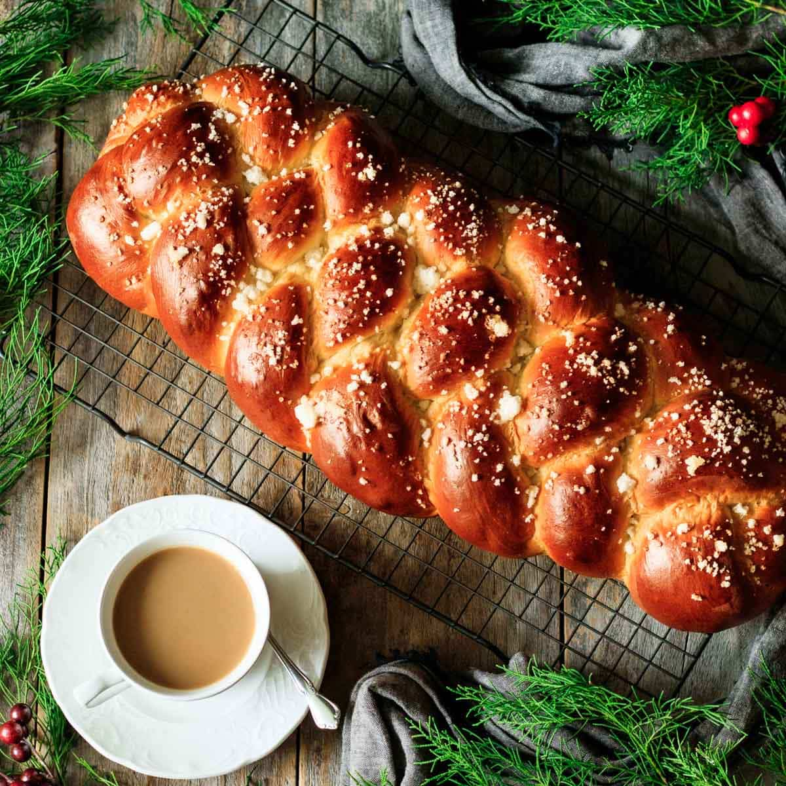

Lasagna

Finnish pulla is a unique bread with a sweet flavor that makes a wonderful holiday gift. It takes about four hours to make, so allow yourself plenty of time..
These are some of the Ingredients
- 2 cups milk
- ½ cup warm water (110 degrees F/45 degrees C)
- 1 (.25 ounce) package active dry yeast
- 1 cup white sugar
- 4 large eggs, beaten
- 1 teaspoon salt
- 1 teaspoon ground cardamom
- 9 cups all-purpose flour
Steps on how to make this dish
- Warm milk in a small saucepan over medium heat until it bubbles, then remove from heat. Let cool until lukewarm.
- Stir together warm water and yeast in a large bowl. Let stand until yeast softens and begins to form a creamy foam, about 5 minutes.
- Stir lukewarm milk, sugar, 4 beaten eggs, salt, and cardamom into yeast mixture. Beat in 2 cups flour until combined. Add 3 cups flour and beat until dough is smooth and elastic. Add melted butter; beat until glossy. Mix in remaining flour until dough is stiff.
- Transfer dough to a floured surface, cover with an inverted mixing bowl, and let rest for 15 minutes.
- Knead dough until smooth and satiny, then place in a lightly greased mixing bowl and turn dough to coat. Cover with a dish towel; let rise in a warm place until doubled, about 1 hour. Punch down dough; let rise again until almost doubled, about 1 hour.
- Preheat the oven to 400 degrees F (205 degrees C). Grease 2 baking sheets.
- Turn dough out again onto a floured surface and divide into 3 equal pieces. Divide each piece into thirds. Roll each piece into a 12- to 16-inch strip. Braid 3 strips into a loaf to get 3 large, braided loaves. Lift loaves onto the prepared baking sheets. Cover with a dish towel and let rise for 20 minutes.
- Beat together 1 egg and water in a small bowl. Brush over loaves and sprinkle with sugar.
- Bake in the preheated oven until the top is golden brown, 25 to 30 minutes. Check occasionally because the bottoms of loaves can burn quickly.